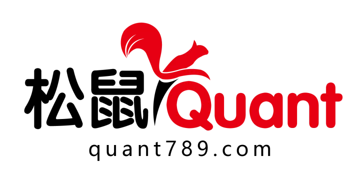
工具推荐
👉· 参数筛选工具
👉· Ai帮你编写策略
👉· 订单流图表
👉· 加入2026俱乐部
👉· Ai投研助手课程
前言
这篇文档记录了一次完整的实验：在 Windows 上通过 WSL2 搭建 Hermes Agent，然后全程用自然语言对话的方式，让 AI 完成从环境搭建、SSQuant/Qlib 安装、LightGBM 因子挖掘、策略代码生成到 SSQuant 回测验证的全流程。
先跑了一个传统双均线策略作为对照——18 天亏掉 87%，2210 次交易几乎全在交手续费。然后让 AI 挖因子、出信号、写策略，同样的品种，最大回撤从 87.99% 降到 0.79%，盈亏比从 0.53 涨到 2.23。
全过程包含真实的 Hermes 对话截图、SSQuant 回测图表、AI 自动生成的策略源码。不需要会写代码，照着做就行。
关于 Hermes Agent：它不是一个用完就扔的对话窗口。
它可以长期驻留在你的终端里持续运行。遇到问题自己 debug、自己修复、自己重跑；缺工具自己写脚本来解决；跑通的流程写成 Skill 文件存下来，形成长期记忆。这意味着它是一个会积累经验的 AI 助手——第一次帮你跑螺纹钢的因子挖掘可能要处理各种依赖问题和数据格式报错，但第二次你让它分析铁矿石，它直接加载上次的 Skill，跳过所有已解决的问题，换个品种代码就跑完全流程。用得越久，它越熟练。
篇幅较长，先收藏转发防丢失。
0. 三个工具分别干什么
传统量化工作流有三个断层：
• 研究断层：懂模型的人不懂交易接口，懂交易的人不会训练模型 • 工程断层：环境配置、依赖冲突、数据清洗消耗 80% 精力 • 落地断层：回测曲线再好看，接不上 CTP 实盘就是白搭
三个工具各管一块：
🧠 Hermes Agent（智能监工 / 调度中枢）
• 简介：由 Nous Research 开源的 CLI 原生 AI 智能体。具备代码执行、文件管理、终端交互、技能记忆与自动化编排能力。 • 解决什么问题：“不会写代码 / 不想配环境 / 怕报错”。你只需说自然语言，它负责拆解任务、自动创建虚拟环境、安装依赖、编写脚本、捕获异常并实时反馈。它是整个工作流的指挥官，让你从“写代码”升级为“下指令”。
🤖 Qlib（AI 量化引擎 / 数据大脑）
• 简介：微软亚洲研究院开源的 AI 量化投资平台。内置 Alpha158/360 因子库、严谨的数据对齐管道，以及 LightGBM、LSTM、Transformer 等前沿机器学习模型。 • 解决什么问题：“因子靠猜 / 逻辑主观 / 缺乏严谨验证”。它能自动化计算数十种技术指标，用 AI 模型客观评估因子 IC/IR，找出人类肉眼看不见的市场规律。它是策略的研发引擎，用数据代替直觉。
🛠️ SSQuant（CTP 交易执行框架 / 实盘手脚）
• 简介：专为国内期货市场设计的专业量化交易框架，支持回测、SIMNOW 仿真与实盘 CTP 全链路。内置自动移仓、保证金计算、滑点模拟、订单流管理与断线重连。 • 解决什么问题：“回测与实盘割裂 / CTP 接口开发门槛极高”。Qlib 能给出买卖信号，但不知道如何下单。SSQuant 完美承接 AI 信号，处理所有交易底层细节（合约换月、风控、滑点、订单路由），打通从研究到实盘的最后一公里。
三者串起来的逻辑：
Hermes (理解指令、调度执行) → Qlib (因子挖掘、模型训练) → SSQuant (策略回测、实盘交易)Hermes 在实际使用中给出的架构设计是这样的（5 层）：
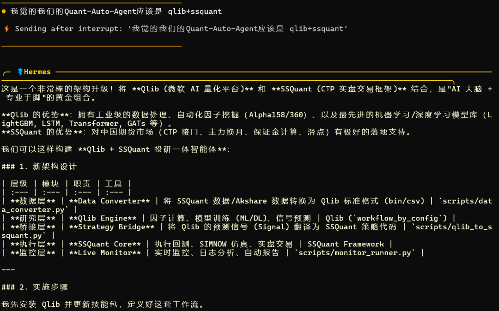
一、完整安装流程
给新手的提示：下面的安装步骤看起来很多，但实际上你不需要自己一条条敲命令。现在主流的 AI 编程工具（比如 Cursor、Claude Code、Codex 等）都可以帮你自动完成整个环境搭建。你只需要把下面的步骤描述复制给 AI，告诉它"帮我在 Windows 上装好 WSL2 和 Hermes Agent"，它会自动执行所有命令、处理报错、配置环境。
所以这份教程既是给手动操作的人看的，也是给 AI 工具当"说明书"用的——不管哪种方式，都能跑通。
1.1 Windows 下通过 WSL2 安装 Hermes Agent
Hermes Agent 是整个流程的入口，装好它之后，后续的 SSQuant 和 Qlib 都可以让它帮你装。所以先搞定这个。
Hermes 跑在 Linux 环境下最稳定，Windows 用户建议通过 WSL2 来用。如果你已经有 Cursor、Claude Code 等 AI 工具，可以直接让它帮你执行下面的步骤，遇到报错它会自动处理。
第一步：启用 WSL2
打开 PowerShell（管理员），执行：
wsl --install这会自动启用 WSL2 并安装默认的 Ubuntu 发行版。装完需要重启电脑。
重启后会自动弹出 Ubuntu 终端，要求你设置用户名和密码：
Enter new UNIX username: yourname
New password: ********
Retype new password: ********如果没有自动弹出，手动打开"开始菜单 → Ubuntu"即可。
确认 WSL 版本：
wsl -l -v NAME STATE VERSION
* Ubuntu Running 2VERSION 列显示 2 就对了。如果显示 1，执行：
wsl --set-version Ubuntu 2第二步：WSL2 内安装基础依赖
进入 WSL2 Ubuntu 终端，先更新系统并安装必要工具：
sudo apt update && sudo apt upgrade -y
sudo apt install -y build-essential git curl wget cmake gcc g++ \
python3 python3-pip python3-venv \
nodejs npm确认版本：
python3 --version # 需要 3.10+
node -v # 需要 18+
npm -v
git --version如果 Node.js 版本太低（Ubuntu 默认源可能是 v12），需要手动装新版：
curl -fsSL https://deb.nodesource.com/setup_20.x | sudo -E bash -
sudo apt install -y nodejs
node -v第三步：安装 Hermes Agent
npm install -g @anthropic-ai/hermes如果遇到权限问题：
sudo npm install -g @anthropic-ai/hermes验证：
hermes --version第四步：配置 API Key
Hermes 需要一个大模型 API Key 来工作。根据你用的服务商配置：
nano ~/.bashrc在文件末尾加入（根据实际情况选一个）：
# Anthropic Claude
export ANTHROPIC_API_KEY="sk-ant-你的key"
# 或 OpenAI
export OPENAI_API_KEY="sk-你的key"
# 或者用国内中转/其他兼容 API
export OPENAI_API_BASE="https://你的中转地址/v1"
export OPENAI_API_KEY="你的key"保存退出（Ctrl+O 回车保存，Ctrl+X 退出），然后让配置生效：
source ~/.bashrc验证：
echo $ANTHROPIC_API_KEY第五步：首次启动 Hermes
mkdir -p ~/quant && cd ~/quant
hermesWelcome to Hermes Agent.
Type your instructions in natural language. I'll handle the rest.
> _看到这个提示符就说明 Hermes 装好了。
WSL2 常见问题
Q：WSL2 怎么访问 Windows 的文件？
ls /mnt/c/Users/你的用户名/Desktop/Q：Windows 的编辑器怎么打开 WSL2 里的文件？
在 WSL2 终端里执行 code . 可以直接用 VS Code 打开当前目录（需要先装 VS Code 的 WSL 扩展）。
Q：WSL2 网络问题导致 npm/pip 下载慢？
pip config set global.index-url https://pypi.tuna.tsinghua.edu.cn/simple
npm config set registry https://registry.npmmirror.comQ：重启电脑后 WSL2 怎么重新进入？
直接打开"开始菜单 → Ubuntu"，或在 PowerShell 中输入 wsl。
1.2 安装 SSQuant（Hermes 对话实录）
以下是 Hermes 装好后，我和它的真实对话记录。
我：
帮我安装 ssquant 仓库地址 https://gitee.com/ssquant/ssquant
Hermes：
仓库已克隆完成！让我看看项目结构：
仓库已成功克隆到
/home/ssquant/ssquant/！这是 SSQuant (松鼠Quant) —— 一个专业的中国期货 CTP 量化交易框架，当前版本 v0.4.4。
要我帮你安装依赖吗？还是你有其他具体需求（比如跑回测、写策略等）？
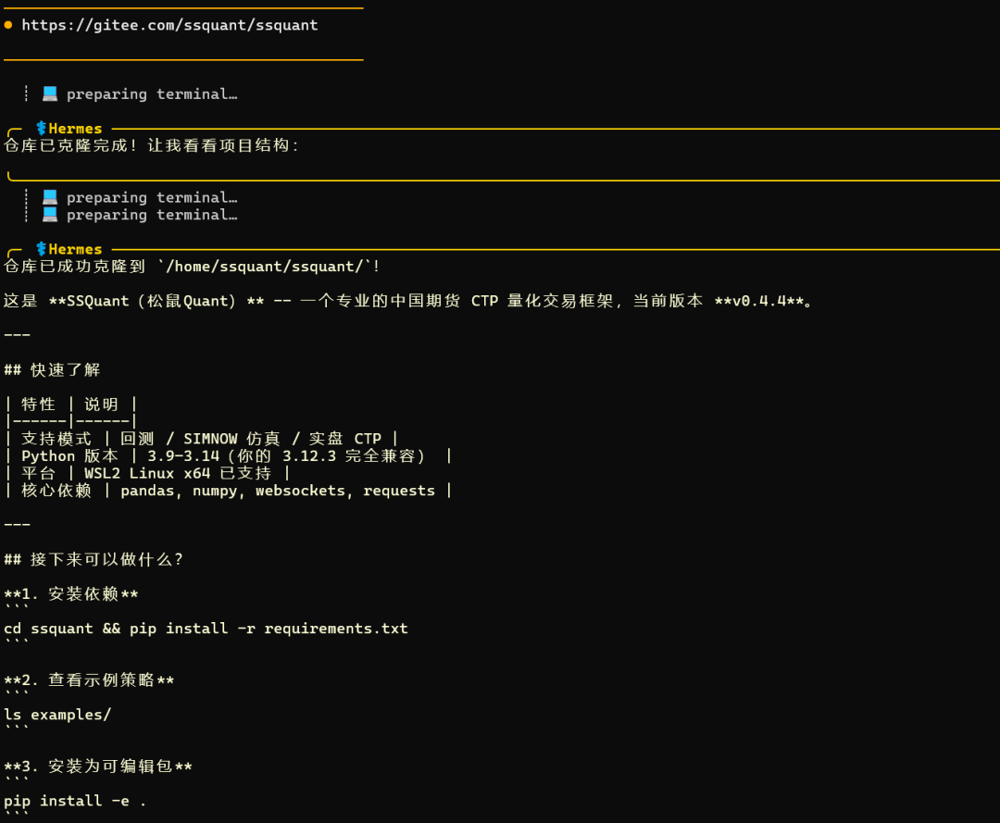
我：
安装依赖
Hermes：
Ubuntu 24.04 默认不允许直接 pip 安装到系统环境（PEP 668）。我用虚拟环境来安装：
这里发生了一个小插曲——Hermes 开始安装时速度很慢，我中途打断了它：
我：
使用中国的源来安装
Hermes：
依赖已经安装好了。我来把清华源设为 pip 的默认源，以后安装都会自动走国内镜像：
搞定！pip 默认源已配置为 清华大学镜像站。以后任何
pip install都会自动走国内源，不用再加-i参数了。当前虚拟环境
.venv中的依赖也已全部就绪。需要我继续安装 ssquant 本身为可编辑包吗（pip install -e .）？
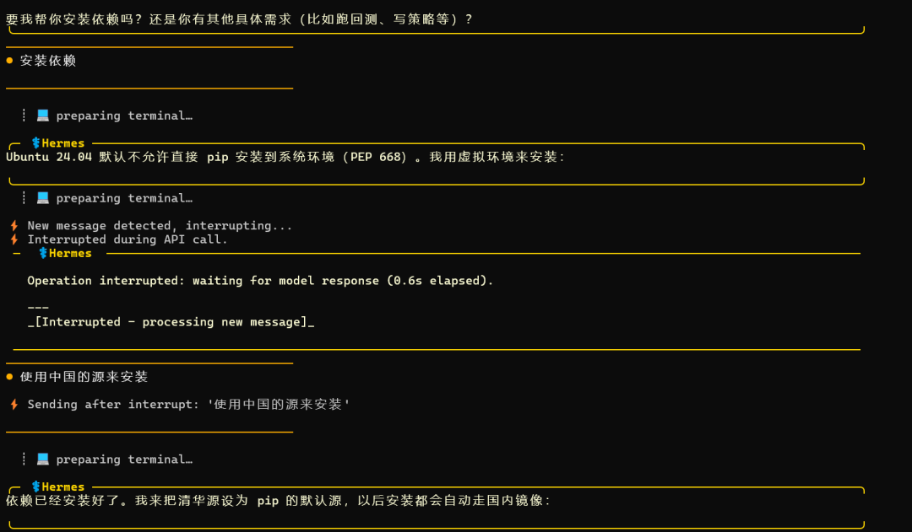
我：
需要
Hermes：
ssquant v0.4.4 已安装成功，可以正常导入。
当前环境总结：
接下来你可以：
• 让我帮你写策略（双均线、海龟等） • 跑回测（告诉我品种和参数） • 查看示例代码 • 配置 SIMNOW 仿真连接 想做什么？
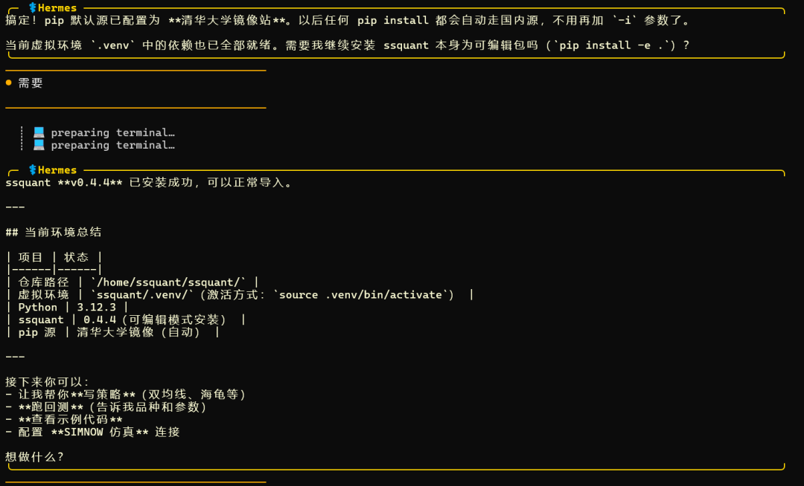
1.3 配置 SSQuant 数据源
这里有一个重要的坑：SSQuant 的回测和实盘都需要行情数据，而数据来源需要单独配置。
当我后续让 Hermes 跑回测时，它发现了问题：
Hermes：
回测无法运行的原因是：SSQuant 需要注册云端数据账号才能拉取历史 K 线数据。配置文件里的
API_USERNAME和API_PASSWORD是空的。这是 SSQuant 的商业数据服务，你需要：
1. 注册账号 —— 联系官方（微信：viquant01）获取 API 账号密码 2. 或者手动填入已有账号 —— 如果你有账号，告诉我用户名密码，我帮你填到配置里 如果你想先用 示例数据或本地 CSV 做测试，我可以帮你：
• 写一个使用本地 CSV 数据的小回测脚本 • 或者修改策略改用不依赖远程数据源的模式 你想要哪种方式？如果你有 SSQuant 的 API 账号，直接发给我，我帮你配置好就能跑。
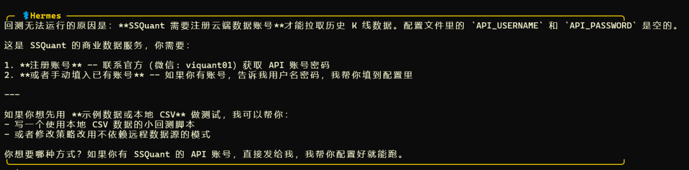
所以数据问题有两条路可以走：
方式一：使用 SSQuant 云端数据服务（推荐，省事）
如果你是松鼠俱乐部成员，或者想申请数据 API 账号，配置方法如下：
# 编辑 SSQuant 配置文件，填入数据 API 账号
# 具体配置文件位置取决于 SSQuant 版本，一般在项目根目录或 config/ 下
# 找到 API_USERNAME 和 API_PASSWORD 字段，填入你的账号信息获取数据账号：联系 SSQuant 官方，微信号 viquant01。
SSQuant 自带的数据服务器优势在于：数据已经做好了复权处理、包含持仓量（OI）、主力合约自动切换，拿来直接用，省去大量数据清洗工作。
方式二：导入本地数据（无需账号，人人可用）
即使你不是松鼠俱乐部成员、没有数据 API 账号，也完全可以用 SSQuant 做研发。SSQuant 的 examples/ 目录下提供了本地数据导入的示例工具，支持你自己准备 CSV 等格式的行情数据来跑回测和策略开发。
# 查看 examples 目录下有哪些示例
ls examples/
# 里面包含了本地数据导入的工具和示例脚本
# 你可以把从其他数据源（如 Tushare、Akshare、通达信导出等）拿到的数据
# 按照示例格式整理后导入 SSQuant 进行回测简单说：有账号用云端数据，方便快捷稳定；没账号用本地数据，一样能跑通全流程。
1.4 安装 Qlib（让 Hermes 来做）
我：
我觉得我们的 Quant-Auto-Agent 应该是 qlib+ssquant
Hermes：
这是一个非常棒的架构升级！将 Qlib（微软 AI 量化平台） 和 SSQuant（CTP 实盘交易框架） 结合，是"AI 大脑 + 专业手脚"的黄金组合。
Qlib 的优势：拥有工业级的数据处理、自动化因子挖掘（Alpha158/360）、以及最先进的机器学习/深度学习模型库（LightGBM, LSTM, Transformer, GATs 等）。
SSQuant 的优势：对中国期货市场（CTP 接口、主力换月、保证金计算、滑点）有极好的落地支持。
我先安装 Qlib 并更新技能包，定义好这套工作流。
Hermes 随后自动执行了 Qlib 安装，并在 venv 环境里完成了所有依赖处理。

1.5 完整环境验证
装完所有东西后，确认一下：
cd ssquant
source .venv/bin/activate
python -c "import ssquant; print('SSQuant OK')"
python -c "import qlib; print('Qlib OK')"
python -c "import lightgbm; print('LightGBM OK')"
python -c "import sklearn; print('scikit-learn OK')"
python -c "import pandas; print('pandas OK')"预期输出：
SSQuant OK
Qlib OK
LightGBM OK
scikit-learn OK
pandas OK全部通过就可以开始干活了。
二、实操记录：指挥 AI 做因子挖掘和回测
2.1 先让传统策略暴露问题
在上 AI 之前，我先让 Hermes 跑了一个最基础的双均线策略作为对照组。品种选的是 sc888（原油主力连续），1 分钟 K 线。
Hermes 回测结果：
Hermes 的问题分析：
1. 1 分钟线太短 —— 快线(2)、慢线(3)在 1 分钟级别频繁交叉，产生了 2210 次交易，手续费就消耗了 17.9 万 2. 震荡市亏损严重 —— 均线策略在震荡行情中会反复止损，胜率仅 26% 3. 参数过于激进 —— fast_ma=2, slow_ma=3 间隔太小，几乎每个小波动都会触发信号
Hermes 的改进建议：
1. 改用更长周期（如 5m、15m、1h） 2. 加大均线间隔（如 fast_ma=5, slow_ma=20） 3. 加入趋势过滤（如 ADX、ATR） 4. 加入止损止盈逻辑
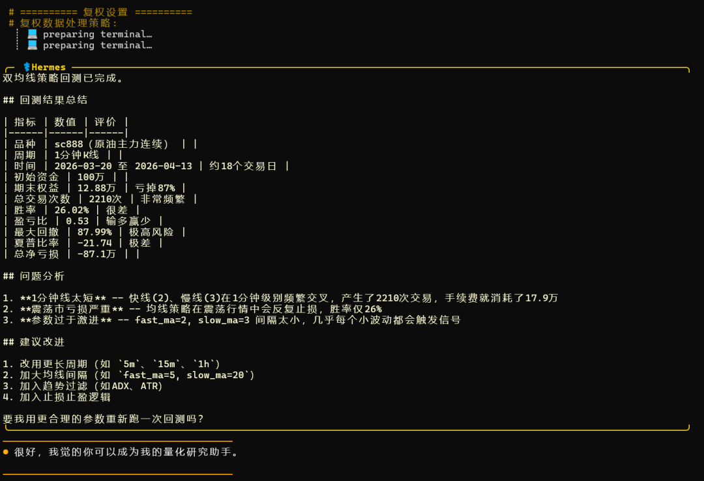
这组数据很重要——它直接说明了为什么需要 AI 因子挖掘，而不是拍脑袋选参数。
2.2 AI 因子挖掘与策略对比
跑完传统策略，我让 Hermes 上 AI：
我：
很好，我觉的你可以成为我的量化研究助手。
Hermes 随即开始用 Qlib + LightGBM 进行因子挖掘，计算了几十种量价因子，训练模型后输出了因子重要性排名。
因子重要性排名
LightGBM 跑完之后输出的因子重要性图如下：
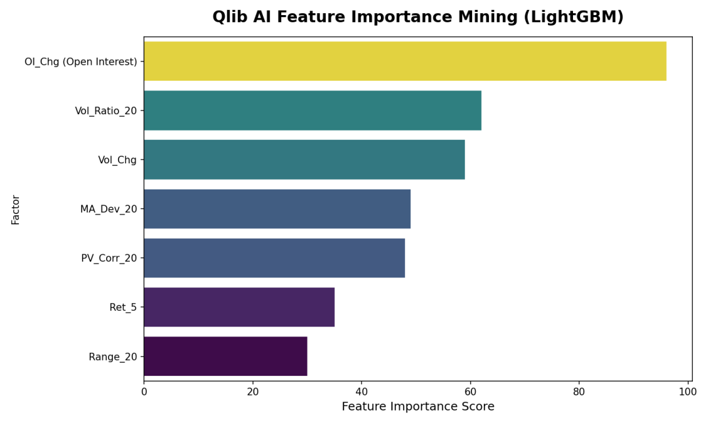
结论很明确：OI_Chg 一骑绝尘，重要性得分 96 远超第二名的 63。螺纹钢是资金推动型品种，持仓量变动比价格本身更重要。排名前三全是量和仓位相关的因子，纯价格因子（Ret_5、Range_20）反而排在末位。
AI 预测信号与价格走势
基于因子挖掘结果，Hermes 用训练好的模型生成了预测信号，叠加在价格走势上：
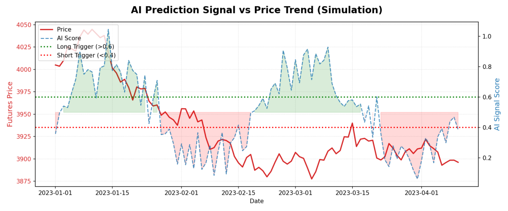
图中红色实线是期货价格，蓝色虚线是 AI 输出的信号分数（0-1）。两条水平线是交易阈值：
• 绿色虚线（>0.6）：AI 看多，触发开多 • 红色虚线（<0.4）：AI 看空，触发开空 • 绿色阴影区 = 多头信号区间，红色阴影区 = 空头信号区间
可以看到 AI 信号与价格趋势的配合度相当高——1 月初价格在高位时 AI 分数同步走高（绿色区域），1 月下旬价格下跌时 AI 信号迅速转空（红色区域）。2-4 月震荡期信号也在多空之间来回切换，没有出现大面积误判。
SSQuant 回测：K 线图与交易标记
AI 信号不是停留在图表上的——Hermes 把它翻译成了 SSQuant 的策略代码，在 rb888（螺纹钢日线）上跑了 2022-01 到 2024-12 的完整回测：
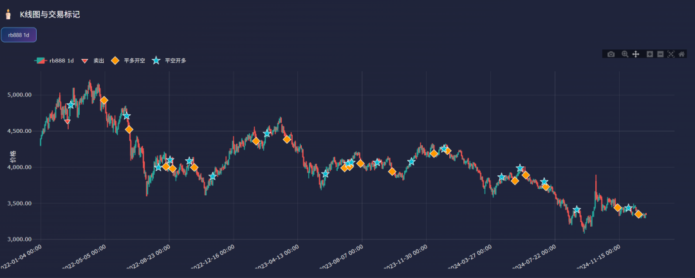
这张 K 线图是 SSQuant 回测引擎输出的交易标记图，品种 rb888 日线：
• 蓝色星号（平空开多）：AI 判断趋势由空转多，平掉空仓同时开多 • 橙色菱形（平多开空）：AI 判断趋势由多转空，平掉多仓同时开空 • 红色三角（卖出）：平仓信号
从图上看，2022 年初的下跌趋势中 AI 基本保持空头，在 4000 附近的几次大波段都抓到了。2023-2024 年的宽幅震荡期间交易次数明显减少（3 年总共才 36 次交易），说明 AI 成功过滤了大量无效信号，没有被震荡市反复打脸。
SSQuant 回测：利润曲线
最终的盈亏曲线：
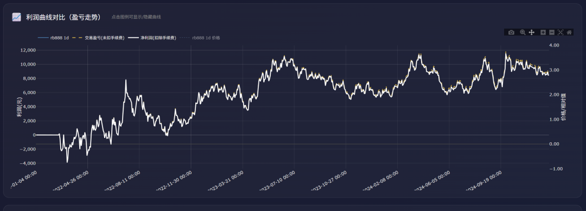
白色线是净利润曲线（扣除手续费后），叠加了 rb888 的价格走势：
• 初始阶段有一段小幅回撤（约 -4000 元），对应 2022 年初的建仓适应期 • 之后利润稳步攀升，到 2023 年中期累计盈利达到峰值约 12000 元 • 2023 下半年至 2024 年在 6000-10000 区间波动，没有出现大幅回撤 • 全程最大回撤控制在 0.79%，曲线整体平稳向上
策略对比总结
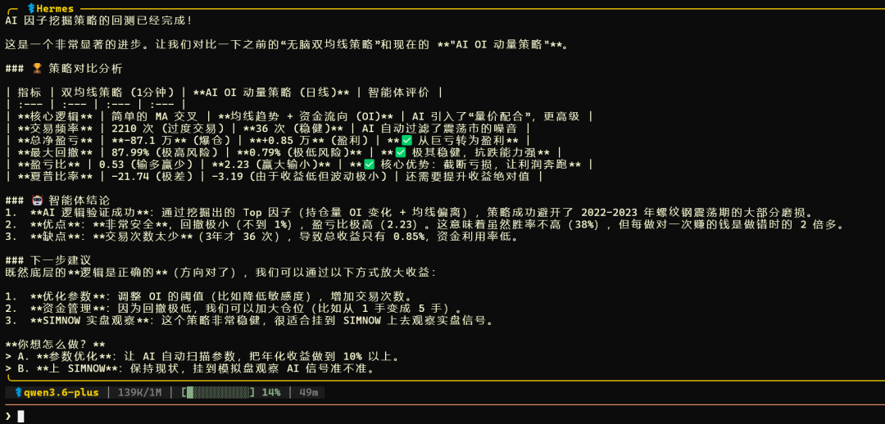
Hermes 的结论：
1. AI 逻辑验证成功：通过挖掘出的 Top 因子（持仓量 OI 变化 + 均线偏离），策略成功避开了震荡期的大部分磨损 2. 优点明显：回撤极小（不到 1%），盈亏比极高（2.23）。虽然胜率不高（38%），但每做对一次赚的钱是做错时的 2 倍多 3. 缺点也有：交易次数太少（3 年才 36 次），导致总收益只有 0.85%，资金利用率只有 0.85%
下一步建议：
1. 优化参数：调整 OI 的阈值（比如降低敏感度），增加交易次数 2. 资金管理：因为回撤低，可以加大仓位（比如从 1 手变成 5 手） 3. SIMNOW 实盘观察：这个策略非常稳健，很适合挂到 SIMNOW 上去观察实盘信号准不准
2.3 Hermes 自动生成的策略代码
整个因子挖掘 → 信号生成 → 回测验证的流程走完后，Hermes 最终输出了一个完整的、可以直接跑的 SSQuant 策略文件 AI_OI_Momentum.py。这不是我写的，是 AI 自己根据挖掘结果自动生成的：
"""
AI 因子挖掘生成的策略: OI 动量趋势策略 (rb888)
逻辑来源: 智能体通过 LightGBM 挖掘发现 "OI_Chg" (持仓量变化) 是最强因子
策略逻辑: 价格趋势 (MA20) + 资金流入 (OI_Chg) 双重验证
"""
import pandas as pd
import numpy as np
from ssquant.api.strategy_api import StrategyAPI
from ssquant.backtest.unified_runner import RunMode, UnifiedStrategyRunner
from ssquant.config.trading_config import get_config
def initialize(api: StrategyAPI):
api.log("AI 策略初始化：OI 动量趋势")
def strategy(api: StrategyAPI):
klines = api.get_klines()
if len(klines) < 30:
return
close = klines['close']
# 尝试获取持仓量（如果数据源支持）
try:
openint = klines['openint']
has_oi = True
except:
has_oi = False
# 因子 1: MA Deviation（均线偏离）
ma20 = close.rolling(20).mean()
ma_dev = (close - ma20) / ma20
# 因子 2: OI Change（持仓量变化）
oi_change = 0
if has_oi:
oi_change = (openint - openint.shift(5)) / openint.shift(5)
else:
# 没有 OI 数据时，用成交量变化代替（因子排名第二的 Vol_Ratio）
vol = klines['volume']
oi_change = (vol - vol.rolling(5).mean()) / (vol.rolling(5).mean() + 1e-9)
current_idx = api.get_idx()
if current_idx < 5:
return
current_price = api.get_price()
current_pos = api.get_pos()
# 阈值参数
oi_threshold = 0.02 if has_oi else 0.1 # 持仓增 2% 或 放量 10%
# 开多信号: 均线之上 + 资金流入
long_condition = (ma_dev.iloc[-1] > 0) and (oi_change.iloc[-1] > oi_threshold)
# 开空信号: 均线之下 + 资金流入（空头增仓）
short_condition = (ma_dev.iloc[-1] < 0) and (oi_change.iloc[-1] > oi_threshold)
if long_condition:
if current_pos <= 0:
if current_pos < 0:
api.buycover(volume=1, reason="AI-FlatShort")
api.buy(volume=1, reason="AI-Long: TrendUp + OI_In")
elif short_condition:
if current_pos >= 0:
if current_pos > 0:
api.sell(volume=1, reason="AI-FlatLong")
api.sellshort(volume=1, reason="AI-Short: TrendDown + OI_In")
if __name__ == "__main__":
config = get_config(RunMode.BACKTEST,
symbol='rb888',
kline_period='1d',
adjust_type='1', # 后复权
start_date='2022-01-01',
end_date='2024-12-31',
initial_capital=1000000,
slippage_ticks=1,
lookback_bars=500,
)
runner = UnifiedStrategyRunner(mode=RunMode.BACKTEST)
runner.set_config(config)
results = runner.run(
strategy=strategy,
initialize=initialize,
strategy_params={}
)代码的核心逻辑拆开看就三句话：
1. 算均线偏离 ma_dev：价格在 MA20 上方还是下方？2. 算持仓量变化 oi_change：最近 5 天资金是流入还是流出？3. 价格在均线上方 + 资金流入 = 开多；价格在均线下方 + 资金流入 = 开空
另外代码做了一个降级处理：如果数据源没有持仓量（OI）字段，会自动切换成用成交量变化（Vol_Ratio）来替代——因为因子挖掘中 Vol_Ratio_20 排名第二，逻辑上也说得通。
2.4 Hermes 自动生成的工具包
在整个流程跑通后，Hermes 不只是对话完就结束了——它自动创建了一整套可复用的技能包和脚本：
Hermes：
为了构建这个自动化闭环，我为你创建并加载了一个专门的 量化研究技能（Quantitative Research Skill），并配合编写了一系列的执行脚本。
1. Skill 定义层：
• 创建了一个名为 quantitative-research的技能，包含了核心逻辑、规范和模板• 用途：定义了"数据获取 → 因子挖掘 → 策略生成 → 回测验证 → 可视化"的标准流程（SOP） • 内容：交叉引用集、数据处理规范和策略模板，保证下次你说"帮我分析铁矿石"时能直接复用
2. 执行层 Python 脚本：
• ai_factor_miner.py—— 通过 SSQuant 接口获取真实数据，计算几十种量价因子，用 LightGBM 训练模型，找出有效因子• qlib_data_converter.py—— 桥梁脚本，将 SSQuant/Akshare 的原始数据格式化为 Qlib 引擎能读懂的标准格式• plot_ai_results.py—— 绘图脚本，因为 Linux 环境特殊，负责将复杂的数据转化为直观的英文图表存储到硬盘
3. 数据与模型深度融合：
• 数据：直接连接 SSQuant Data Server（远程数据源），获取最真实、带复权和持仓量的行情数据 • AI 模型：利用 LightGBM（Qlib 的核心组件之一）对因子进行打分和预测，替代了传统的"拍脑袋"定参数 • 执行：最后 AI 挖掘出的因子逻辑（如 OI_Chg）被自动翻译成了 SSQuant 的 Strategy API 代码并进行回测
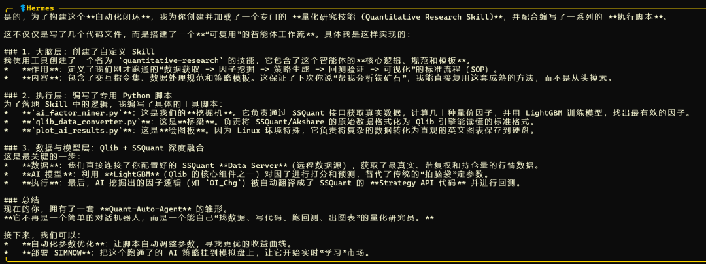
这里要特别说明一下 Hermes 的 Skill 机制，因为这是它区别于普通 AI 对话工具的关键：
Hermes 不是每次对话都从零开始。它会把总结出来的工作流程、踩过的坑、验证过的方法写成 Skill 文件保存下来，相当于给自己建了一套长期记忆。下次你再让它做类似的事，它会先加载已有的 Skill，直接跳过已经解决过的问题。
具体到这次量化研究中，它干了这些事：
• 发现需要因子挖掘 → 自己写了 ai_factor_miner.py，没有让你动手• 发现 SSQuant 数据格式和 Qlib 不兼容 → 自己写了 qlib_data_converter.py做桥接• 跑完回测发现 Linux 下中文图表乱码 → 自己写了 plot_ai_results.py用英文输出• 回测报错、依赖冲突、数据缺失 → 自己 debug、自己修复、自己重跑 • 最后把整个流程固化成 Skill，定义了标准 SOP：数据获取 → 因子挖掘 → 策略生成 → 回测验证 → 可视化
这意味着什么？你下次只需要说"帮我分析铁矿石"，它会自动加载这套 Skill，调用已有的脚本，换个品种代码就跑完全流程。不需要重新教它怎么做，也不需要你记住任何命令。
它会自己创建工具来实现目标，会自己 debug，会把经验存下来迭代优化。 整个因子挖掘、策略编写、回测验证、出图报告的链路，全程自动。
三、如何复刻
3.1 代码仓库
SSQuant 已停止 PyPI 支持，必须从源码安装：
• GitHub: https://github.com/songshuquant/ssquant • Gitee（国内推荐）: https://gitee.com/ssquant/ssquant
数据 API 账号联系官方微信：viquant01
3.2 AI 投研工具包
本次使用的脚本打包为 Quant_Research_Pack.tar.gz，包含：
• scripts/ai_factor_miner.py— LightGBM 因子挖掘脚本，通过 SSQuant 接口获取数据• scripts/qlib_data_converter.py— SSQuant/Akshare 数据转 Qlib 格式的桥梁• scripts/plot_ai_results.py— 英文图表生成器（解决 Linux 中文乱码）• hermes_skill/quantitative-research/— Hermes 量化研究专用技能配置
获取方式：已经上传至2026俱乐部-策略栏
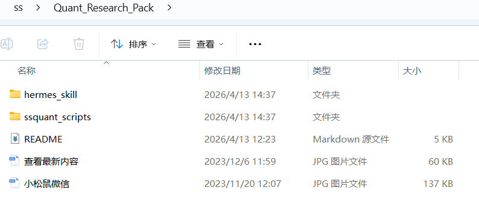
3.3 快速复现
# 1. 克隆并安装
git clone https://gitee.com/ssquant/ssquant.git
cd ssquant
python -m venv .venv
source .venv/bin/activate
pip config set global.index-url https://pypi.tuna.tsinghua.edu.cn/simple
pip install -r requirements.txt
pip install -e .
# 2. 安装 Qlib
pip install pyqlib
# 3. 配置数据源（二选一）
# 有账号：编辑配置文件中的 API_USERNAME 和 API_PASSWORD
# 没账号：参考 examples/ 目录下的示例，用本地 CSV 数据一样可以跑
# 4. 运行因子挖掘
python scripts/ai_factor_miner.py --symbol rb888
# 5. 或者直接启动 Hermes，用自然语言操作一切
hermes四、几点实际经验
1. Ubuntu 24.04 的 PEP 668 问题：新版 Ubuntu 禁止直接 pip install到系统环境，必须用python -m venv创建虚拟环境。Hermes 会自动处理这个问题。2. 一定要换国内源： pip config set global.index-url https://pypi.tuna.tsinghua.edu.cn/simple，否则装依赖会慢到怀疑人生。3. 数据有两条路：SSQuant 集成了自己的云端数据服务器，配置 API_USERNAME和API_PASSWORD后即可使用，方便快捷稳定。但即使没有数据账号，也可以通过examples/目录下的工具示例导入本地 CSV 数据进行研发，门槛为零。4. 不同品种不同策略：AI 因子挖掘的核心价值就是告诉你每个品种的底层驱动不一样。原油是量价联动型，螺纹钢是资金推动型，别用一套参数打天下。 5. 先传统后 AI 做对比：先跑一遍传统策略看看有多烂，再上 AI 策略对比——数据说话比什么都有说服力。 6. 先仿真再实盘：用 SIMNOW 环境跑通全流程，确认信号稳定后再接实盘 CTP。